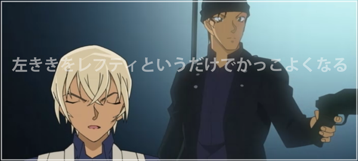
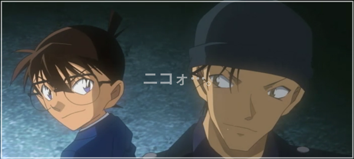
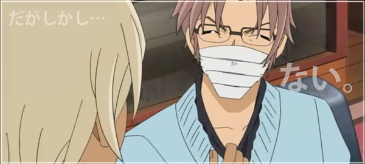
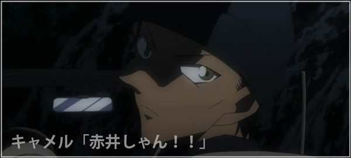
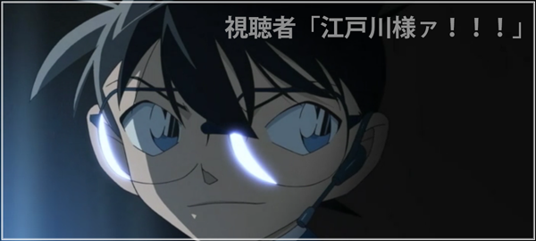

緋色の帰還
工藤邸に訪れた安室は部屋に上がり、死体すり替えトリックについての推理を話す。
ある男が頭を拳銃で撃たれ車ごと焼かれたが、辛うじて焼け起こった右手から採取された指紋が、
生前その男が手に取ったというある少年の携帯電話に付着していた指紋と一致し、遺体が特定された。
しかし撃たれた男は左利きなのに、携帯には右手の指紋がついていたため疑問に思ったという。

右手で取らなければならない理由、それは別の男の右手の指紋がついていたため。
別の男の指紋と混同しないように指先に…
同じく、ジョディもその事に気づき、赤井は指先を透明な接着剤か何かでコーティングし、指紋を付けないようにしていたと考える。
缶コーヒーを落としたのもそのせいだった…そう、携帯に残っていた指紋は赤井ではなく、その前に手に取った楠田の指紋。
つまり、来葉峠で頭を撃たれて焼かれたあの遺体は楠田、赤井は撃たれたふりをして遺体とすり替わったのだと。
その後どうやって逃げたのか？という問いに、撃った女と組んでいたため彼女の車に乗ったと答える。
近所に住む博士の発明品で、監視役の目を欺いた…監視役が必ず頭を撃つと、予想していたから。
沖矢「なかなかやるじゃないですか、その男…」
安室「だが、この計画を企てたのは、別の人物…」
ジョディ「彼の指紋が付いた携帯を使えば… ‼ いや…秀一(シュウ)じゃない…」
安室「そう……別の人物…その証拠に、その男は撃たれた刹那に、こう呟いている…」
「まさかここまでとはな」という言葉に沖矢は、自分の不運を嘆いているようにしか聞こえないという。
「だが、これにある言葉を加えるとその意味は一変する…
まさかここまで…読んでいたとはな…
」
何者かに追跡されていると気づき速度を上げるキャメルとジョディ。
赤井の口癖の一つ「50：50だからお互い様だ」という言葉を聞いて、ジョディは東都デパートで遭遇した沖矢を思い出す。
計画を企てた少年の周りに突然現れた不審人物を捜し、ここにたどり着いたという安室。観念しろと言わんばかりに話す。
「そのマスクを取ってくれませんかねぇ…沖矢昴さん…
いや…
FBI捜査官…赤井……秀一‼
」沖矢はマスクを取るが…「その変装を解けと言っているんだ‼赤井秀一‼」と納得せず喚く安室。
何の話だと疑問に思う沖矢の後ろで流れるTVでは、工藤優作が"緋色の捜査官"という作品でマカデミー賞の最優秀脚本賞を受賞していた。
玄関先に2台、廊下に3台、この部屋には5台の隠しカメラが隠されていることに安室は気づいていた。
FBIにこの映像を送るのか、それともこの様子を誰かが見ているのかと。…別の部屋には沢山のモニターの前に座るコナンの姿が。
そもそも顔や声は似ているのか、という沖矢の質問に、
顔は変装で声は変声期…阿笠博士の発明の中に、チョーカー型変声期があったことも調べていた。
「そう…大きさは丁度…そのハイネックで…隠れるくらいなんだよ‼」

タイヤのエア漏れで追いつかれそうになっていたキャメルとジョディ。今にも車を囲まれるかという、その時…！
「屋根を開けろ…」
その言葉に従うと…
安室の携帯に着信、それは赤井秀一が車に乗っているという報告だった…。
赤井「200ｍ先のストレートに出たら5秒間ハンドルと速度を固定しろ。このくだらないチェイスにケリをつけてやる…」
キャメル「りょ、了解‼」
ジョディ「…っていうか、あんたどこで何をやってたのよ⁉ なんで車に乗ってるわけ⁉」
「全て思惑通りだよ…あのボウヤのな…」
